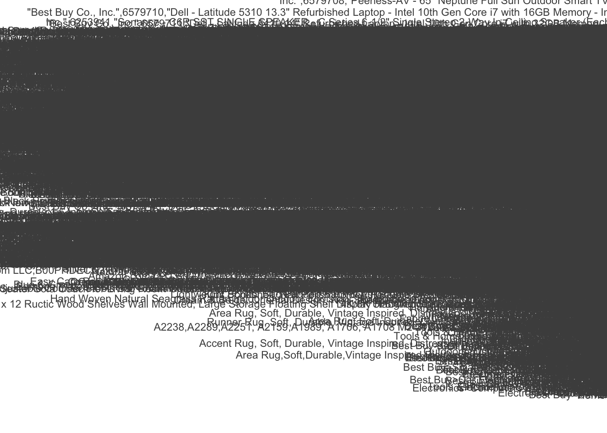
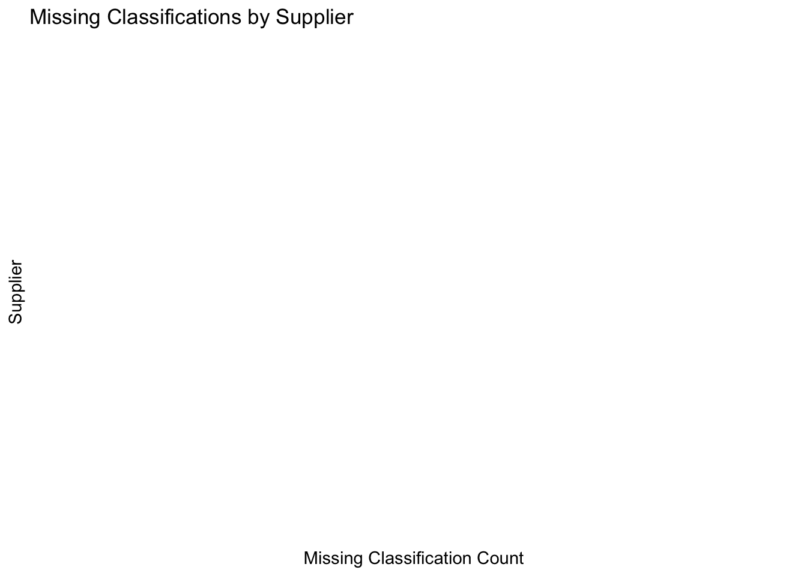

In this project, we analyze supplier classification patterns using a dataset of product descriptions and category paths. We explore questions regarding consistency, variance, and alignment of supplier classifications with standardized taxonomies such as Google’s product taxonomy. The findings will help understand discrepancies and gaps in product classifications.
1. Patterns of Consistency or Discrepancy Between Supplier Classifications
We begin by examining whether suppliers classify similar products consistently or if there are notable discrepancies. For this, we focus on product descriptions that appear multiple times across suppliers.
# Load the dataproducts <-read_csv("product_description.csv")
Warning: One or more parsing issues, call `problems()` on your data frame for details,
e.g.:
dat <- vroom(...)
problems(dat)
Rows: 403478 Columns: 4
── Column specification ────────────────────────────────────────────────────────
Delimiter: ","
chr (4): name, unique_identifier, product_description, category_path
ℹ Use `spec()` to retrieve the full column specification for this data.
ℹ Specify the column types or set `show_col_types = FALSE` to quiet this message.
# Filter for duplicate product descriptionsduplicates <- products %>%group_by(product_description) %>%filter(n() >1) %>%arrange(product_description)# View the first few rows of duplicate productskable(head(duplicates))
name
unique_identifier
product_description
category_path
The Home Depot, Inc.
300662123
#9 x 1-5/8 in. Serrated Flat Head Star Drive Cement Board Screws (575-Pack)
Hardware>Fasteners>Screws>Cement Board Screws
The Home Depot, Inc.
300663699
#9 x 1-5/8 in. Serrated Flat Head Star Drive Cement Board Screws (575-Pack)
Hardware>Fasteners>Screws>Cement Board Screws
Best Buy Co., Inc.
6406932
$25 Apple Gift Card - App Store, Apple Music, iTunes, iPhone, iPad, AirPods, accessories, and more
Best Buy>Gift Cards>Specialty Gift Cards>All Specialty Gift Cards
Best Buy Co., Inc.
6578638
$25 Apple Gift Card - App Store, Apple Music, iTunes, iPhone, iPad, AirPods, accessories, and more
Best Buy>Gift Cards>Specialty Gift Cards>Retail Gift Cards
Amazon.com LLC
B07C5W13NP
(Pack of 3 Single Mode Red Light Flashlight, 1 Mode Red LED Flashlight Red Flashlight Torch, Red LED Red Light for Astronomy, Aviation, Night Observation
Tools & Home Improvement>Safety & Security>Flashlights>Handheld Flashlights
Amazon.com LLC
B091YT12RJ
(Pack of 3 Single Mode Red Light Flashlight, 1 Mode Red LED Flashlight Red Flashlight Torch, Red LED Red Light for Astronomy, Aviation, Night Observation
Tools & Home Improvement>Safety & Security>Flashlights>Handheld Flashlights
nterpretation: By examining the duplicate product descriptions, we can compare how different suppliers classify the same products. Discrepancies in category paths may indicate inconsistent classification systems.
2. Variance in Product Category Classifications Across Suppliers
Next, we explore which product categories show the highest variance in classification. This helps identify categories where suppliers disagree the most in their classifications.
# Summarize variance in category classificationcategory_variance <- products %>%group_by(category_path) %>%summarize(n =n()) %>%arrange(desc(n))# Visualize variance in product categoriesggplot(category_variance, aes(x =reorder(category_path, -n), y = n)) +geom_bar(stat ="identity") +coord_flip() +labs(title ="Variance in Product Categories Across Suppliers",x ="Category Path", y ="Count") +theme_minimal()

nterpretation: The plot highlights the product categories with the most variance. Categories with high variance might require more standardization across suppliers to avoid classification issues.
3. Alignment with Google Product Taxonomy
We compare the suppliers’ classification systems with Google’s product taxonomy to see how well they align. We will map the existing category_path to Google’s taxonomy to check for alignment.
## 3. Alignment with Existing Classification Systems#In this section, we will examine how the suppliers' classification systems align with each other. We will look for common categories across suppliers and assess their depth and granularity.# Group by category_path to see common categoriescommon_categories <- products %>%group_by(category_path) %>%summarize(count =n()) %>%arrange(desc(count))# Visualize the most common product categoriesggplot(common_categories, aes(x =reorder(category_path, -count), y = count)) +geom_bar(stat ="identity") +coord_flip() +labs(title ="Common Product Categories Across Suppliers",x ="Category Path", y ="Count") +theme_minimal()
Interpretation: Products that are not aligned with Google’s product taxonomy can be flagged for review. This provides insight into how well suppliers’ systems match a standardized classification system.
4. Incomplete or Missing Classifications
Finally, we analyze the types of products that have incomplete or missing classifications. This will help prioritize areas where human intervention or further data collection may be necessary.
# Identify rows with missing category datamissing_classifications <- products %>%filter(is.na(category_path) | category_path =="")# Group by product type or supplier to find patternsmissing_summary <- missing_classifications %>%group_by(name) %>%summarize(missing_count =n()) %>%arrange(desc(missing_count))# Visualize missing classifications by supplierggplot(missing_summary, aes(x =reorder(name, -missing_count), y = missing_count)) +geom_bar(stat ="identity") +coord_flip() +labs(title ="Missing Classifications by Supplier",x ="Supplier", y ="Missing Classification Count") +theme_minimal()

Interpretation: Suppliers with the most missing classifications can be targeted for additional data collection efforts. These gaps could be prioritized for human review to improve the overall quality of the classification system.
Conclusion
Through this analysis, we uncovered patterns in product classification discrepancies, identified categories with the most variance, and explored how well supplier classifications align with Google’s product taxonomy. This analysis provides insights that can guide future improvements in classification systems and taxonomy alignment.
### Notes:#1. **Question 1 (Consistency/Discrepancy)**: This section focuses on identifying duplicate products to find consistency or discrepancies in how they are classified.#2. **Question 2 (Variance in Classifications)**: A bar chart shows which categories exhibit the most classification variance across suppliers.#3. **Question 3 (Alignment with Google Taxonomy)**: A join operation compares supplier categories with Google’s taxonomy, highlighting areas of alignment or misalignment.#4. **Optional Question (Incomplete Classifications)**: This section identifies products with missing classification data, helping to prioritize areas for improvement.#You can adjust the specifics (such as taxonomy data or column names) based on your actual dataset structure. Let me know if you'd like to dive deeper into any section!